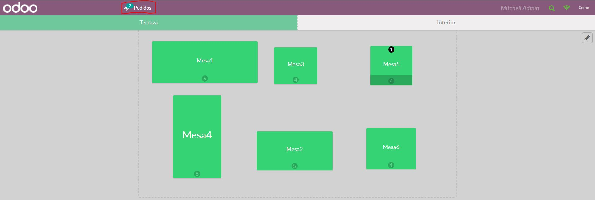
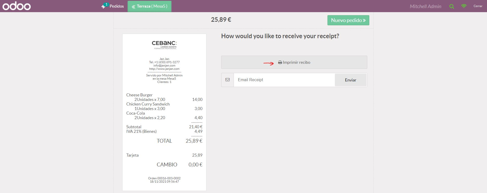

Para poder reimprimir recibos tenemos que haber realizado un pedido o más. Para ello ingresamos en Tablero situándonos encima de Punto de venta

Dentro del Tablero seleccionamos el punto de venta Restaurante y reanudamos el proceso.

Se nos abrirá un menú con las mesas a atender y en el momento que estemos en proceso de pedido arriba tendremos los pedidos abiertos. Clickamos en la pestaña Pedidos.
Dentro encontramos un listado de pedidos y seleccionamos el cual necesitemos reimprimir el recibo.
Cuando seleccionamos el pedido solo necesitamos clickar en Imprimir recibo tantas veces que queremos si es necesario.
